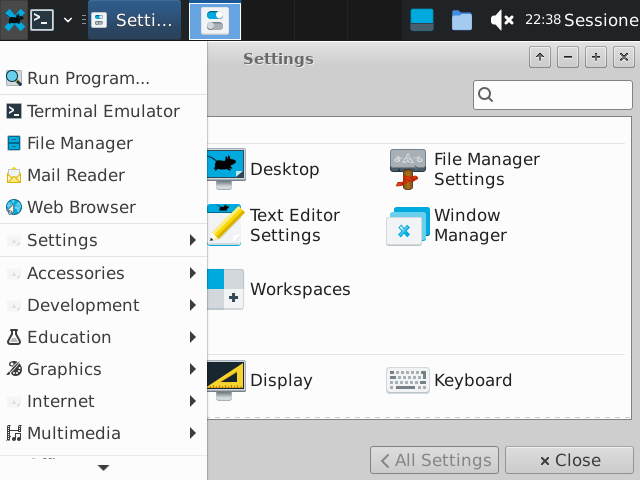
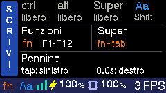
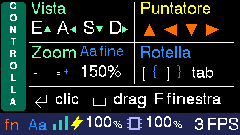

Cardputer
CodeSpace OS
Use a Cardputer ADV to control an XFCE desktop running in GitHub Codespaces. The external touch TFT shows Linux. The Cardputer’s built-in screen shows keyboard and pointer controls.

On the Cardputer
Tap Opt to switch between typing and pointer controls. Use the stylus to click on the TFT.
Firmware previews with simulated session data.


What you’ll need
A Cardputer ADV, a 2.8-inch TFT with XPT2046 touch wired for V2, a USB data cable, and access to GitHub Codespaces.
Work in progress
I maintain CS OS on my own. Audio can drop out, and video slows down when the desktop is busy. The public bootstrap still needs an end-to-end test on a fresh Codespace.
If you’d like to work on audio, video performance, or setup, see the contribution guide.